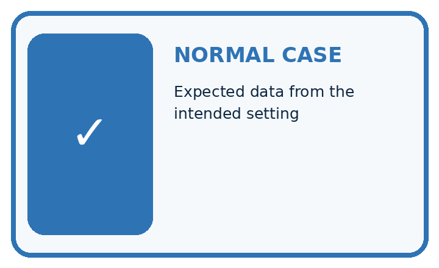
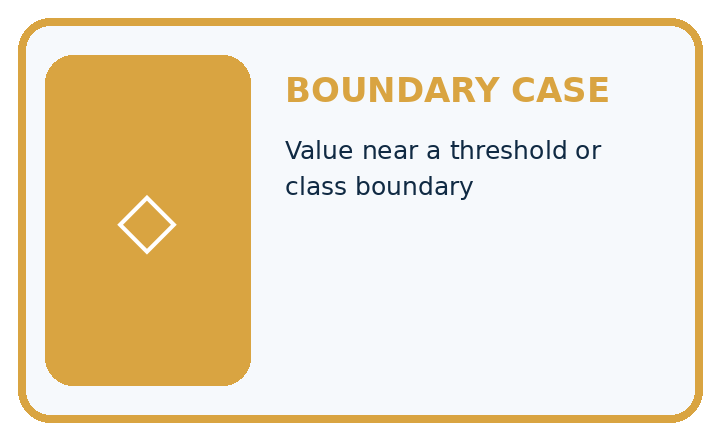
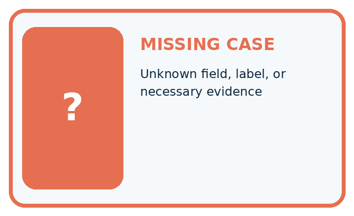
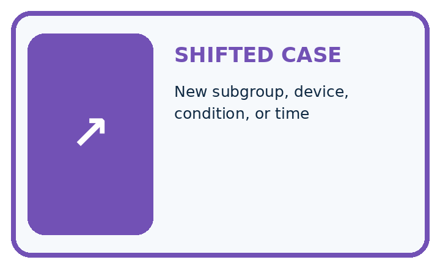
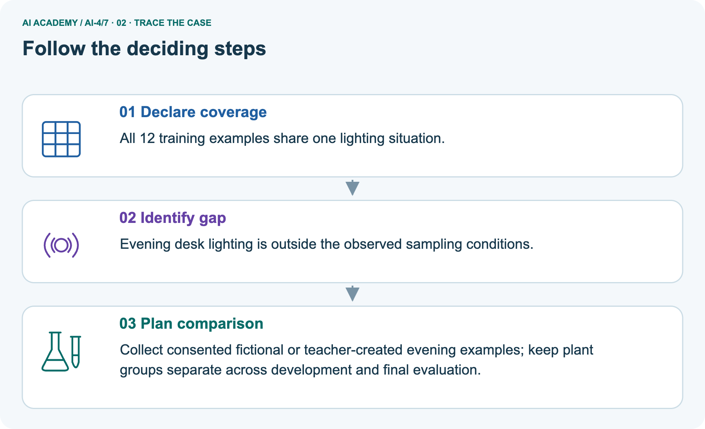
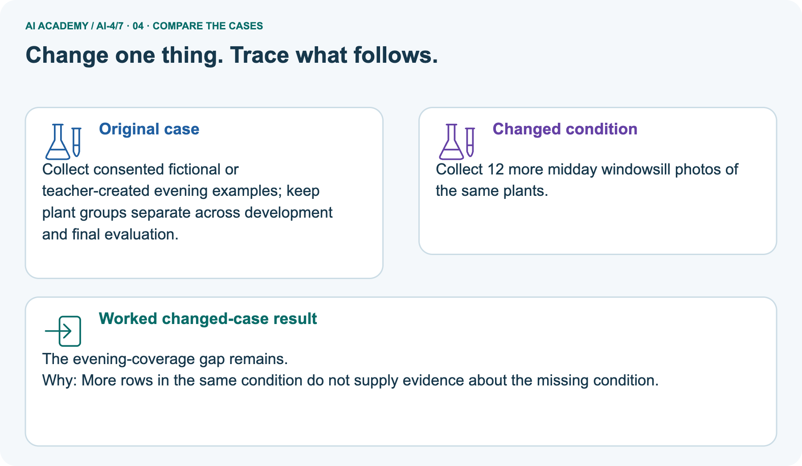
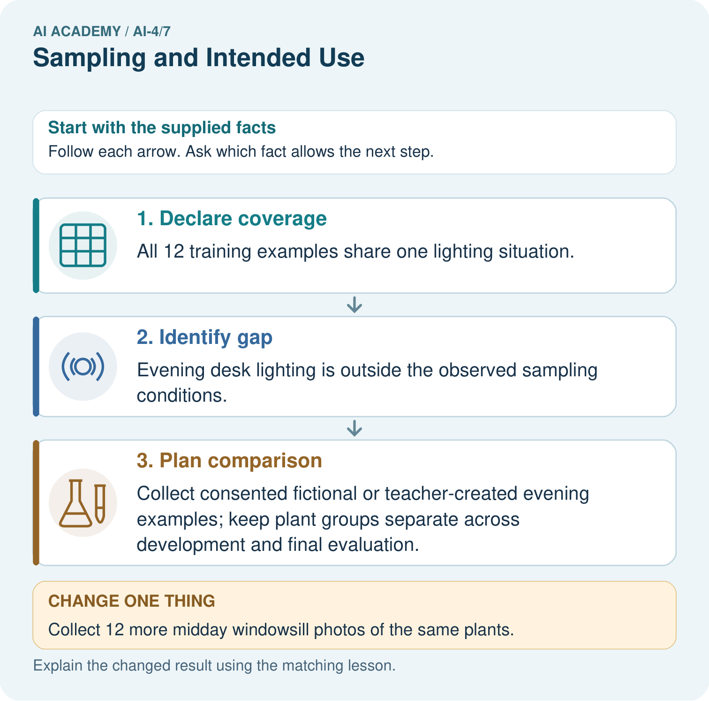
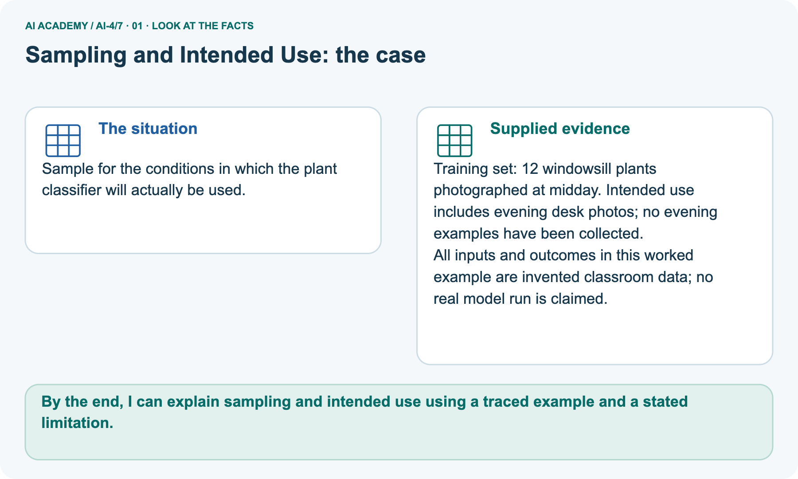
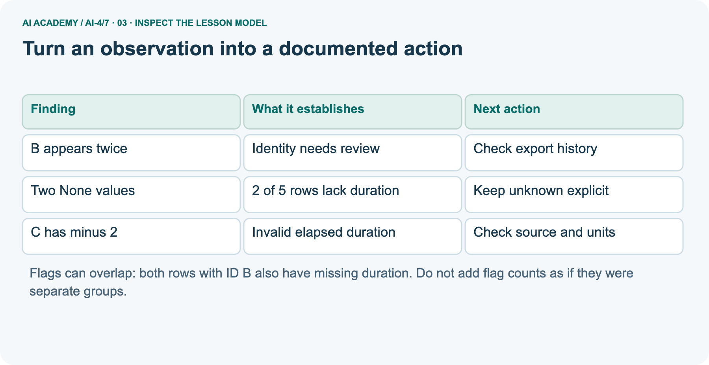

AI Academy · Level 4 · Grade 9 · Week 7 · Student lesson
Sampling and Intended Use
Learn to understand, design, build, test and explain AI systems responsibly.
Project: Responsible Plant Classifier
THE CONNECTED WEEK
Define the use. Count the conditions. Name the gap.
Compare source-aware sample coverage without treating volume as accuracy.
Keep one habit: Intended use → complete A/B manifests → four-cell counts → twelve-plant picture → collection lab → independent outdoor plan.
Main lesson · Section 1
Who and what must this model work for?
Compare the intended conditions with the actual sample before making a performance claim.
Current sampling goals
I can define the population and conditions in an intended-use statement.
I can compare sample coverage using explicit condition counts and source IDs.
I can plan collection and evaluation for missing conditions without claiming guaranteed accuracy.
Retrieve labeling and source reasoning
Close your notes first. A rough first answer helps us choose the right starting point; it is not a score for your ability.
Without opening the old lesson, explain one key idea from Label Quality. Give an example and a mistake that the idea helps you avoid.
Without opening the old lesson, explain one key idea from Python and Table Readiness. Give an example and a mistake that the idea helps you avoid.
Without opening the old lesson, explain one key idea from The ML Lifecycle. Give an example and a mistake that the idea helps you avoid.
Why can two annotators agree while both apply the wrong label rule? What information about collection conditions belongs with those labels?
Your end goal
By the end, I can explain sampling and intended use using a traced example and a stated limitation.
Earlier wording, alternatives and picture transcripts
Your learning target
Remember before reading
After trying, check the relevant lesson or ask your teacher. Change the part of your explanation that the evidence shows was wrong.
Training examples should represent the people, objects, conditions, and devices described by the intended-use statement.

LEARNING TARGET Training uses indoor photos from one phone; deployment uses outdoor photos from several phones. Specify two evaluation slices and explain why adding more indoor photos may not resolve the gap.
Builder name and experiment date:
Readiness for the connected explanation
This week’s end goal
Main lesson · Section 2
Read two complete sample manifests against one declared use
Sample size and condition coverage answer different questions.
Intended-use contract
A sample is the examples collected; the intended population is the set of objects and conditions the proposed use concerns. Define the use before choosing a convenient table. This fictional classroom wants plant-photo classification for two light settings (day and evening) and two cameras (A and B), for the declared toy label rule.
The four combinations all matter here; equal counts are a classroom comparison choice, not a universal requirement for every real deployment.
Complete photo manifests
| Sample | Plant IDs / condition | Photo count |
|---|---|---|
| A | P01–P09: day, camera A; one photo per plant | 9 |
| A | P10: evening, camera A | 1 |
| B | Q01–Q03: day, camera A | 3 |
| B | Q04–Q06: day, camera B | 3 |
| B | Q07–Q09: evening, camera A | 3 |
| B | Q10–Q12: evening, camera B | 3 |
Source, row meaning and unknown dimensions
Every row here is a compact manifest entry, not one photo: expand the named ID range to recover each individual photo. All IDs are distinct within each sample, all data are invented and no model outputs are supplied. Source is the teacher-created Coverage v1 fixture. Intended use is classroom comparison only; real navigation, diagnosis and broad plant-health claims have no evidence here.
Record plant type and label-class coverage as unknown because this fixture does not supply them.
Review · Earlier trip-inspection source
A dataset can look like a neat table and still contain missing outcomes, repeated records or impossible values. Before fitting a model, inspect what one row represents and document where the table came from.
A dataset card is a short record of its purpose, contents, collection, changes and limits. It helps another person decide whether the data suits a proposed use.
Our source is a teacher-authored fictional export called Robot practice v1, created for this lesson. Each row is intended to describe one trip, with one unique trip ID and elapsed duration in minutes.
Durations may be zero or positive; None means unknown. All trips are described as indoor practice trips. No real robot measurements or personal records were collected, and there is no evidence about outdoor performance.
| Trip ID | Duration in minutes | What is visible |
|---|---|---|
| A | 8 | A recorded duration |
| B | None | An unknown duration |
| B | None | The same ID appears again |
| C | -2 | A negative duration |
| D | 12 | A recorded duration |
Keep this raw version unchanged. At this stage a flag means investigate, not automatically delete or replace. A repeated ID might be a copied row or a problem with the supposed one-row-per-trip definition.
We need evidence before deciding what happened.
Earlier wording, alternatives and picture transcripts
PICTURE ENTRY
Notice → Predict → Explain
Begin with visible evidence; do not explain more than the picture and information support.
MYSTERY The team must use sampling and intended use to solve a model-building problem. What information do they have? What important evidence is still missing?
Name three visible details without interpreting them.
Predict the data, model, or evaluation decision being made.
Identify one hidden assumption that could change the result.
State what evidence would confirm or reject your prediction.
My prediction and supporting evidence:
A closer explanation
Main lesson · Section 3
Count each intended condition and each distinct source plant
Coverage is an input-data description, not a model score.
Complete counting program
samples = {
"A": [(f"P{i:02}", "day", "A") for i in range(1, 10)]
+ [("P10", "evening", "A")],
"B": [(f"Q{i:02}", light, camera)
for start, light, camera in [(1, "day", "A"), (4, "day", "B"),
(7, "evening", "A"), (10, "evening", "B")]
for i in range(start, start + 3)]
}
for name, rows in samples.items():
print(name, len(rows), len({plant for plant, light, camera in rows}))
for light, camera in [("day", "A"), ("day", "B"),
("evening", "A"), ("evening", "B")]:
count = sum(l == light and c == camera for plant, l, c in rows)
print(light, camera, count)
Trace every condition count
| Condition | Sample A | Sample B |
|---|---|---|
| Day/camera A | 9 | 3 |
| Day/camera B | 0 | 3 |
| Evening/camera A | 1 | 3 |
| Evening/camera B | 0 | 3 |
| Total photos / distinct plants | 10 / 10 | 12 / 12 |
Explain the bounded comparison
A is 9/10 daylight and contains no camera-B photos. B covers all four stated combinations with three photos each. That supports a narrower claim about these recorded conditions, not greater accuracy or full representativeness: species, labels, selection method and real intended-use frequencies are not supplied.
The program assumes valid nonempty tuples and correct condition strings; it counts records, not measurement truth. Different views of the same plant are related observations and must retain the shared plant ID for later split design.
Review · Earlier trip audit program and assumptions
rows = [("A", 8), ("B", None), ("B", None),
("C", -2), ("D", 12)]
ids = set()
missing = 0
negative = 0
for trip_id, minutes in rows:
ids.add(trip_id)
if minutes is None:
missing = missing + 1
elif minutes < 0:
negative = negative + 1
print(len(rows), len(ids), missing, negative)A set stores each distinct ID once. The output is 5 4 2 1: five rows, four distinct IDs, two rows with unknown duration and one row with a negative duration. There is one extra occurrence beyond the four distinct IDs.
This is not a count of all rows in repeated-ID groups: both B rows belong to that group.
Turn an observation into a documented action
The code assumes every row is a pair and each duration is a number or None. It is a small audit, not full schema validation. It does not check text values, units, source truth or whether IDs refer to real unique events.
A successful run does not certify data quality.
Earlier wording, alternatives and picture transcripts
ML MECHANISM
Input → Model → Evidence
Trace the information, fitted behavior, and evaluation proof separately.


QUESTION Compare two samples against a deployment population and identify missing conditions.
MODEL IDEA Training examples should represent the people, objects, conditions, and devices described by the intended-use statement.
PROOF NEEDED Use an unseen case, visible calculation, error analysis, and a stated limitation.
UNDER THE HOOD Intended use includes indoor classroom plants under day and evening light. Sample A has 90% daylight photos from one camera.
Draw a fresh data → model → prediction → evaluation trace:
A closer explanation
Connect the picture and the explanation
Point to the input, the deciding step and the result in this week’s visual. Explain the same step in ordinary words. A picture helps when you can say what each part represents.
Main lesson · Section 4
Compare a bigger familiar sample with missing intended conditions
More rows do not necessarily add new conditions or independent plants.
Four evaluation conditions


NORMAL Expected data and expected behavior.


Keep this boundary clear
BOUNDARY Value close to a threshold, ambiguous label, or uncertain prediction.


MISSING Necessary field, label, source, or measurement is unavailable.


SHIFTED New lighting, species, device, subgroup, or time condition.
Keep the claim bounded
RELEASE RULE Passing one case never proves generalization. Predefine expected behavior for all four categories.
Choose a revealing case
Which case most threatens today's claim, and why?
Predict the supplied changed case
Change: Collect 12 more midday windowsill photos of the same plants.
Check after predicting
Prediction: The evening-coverage gap remains.
Reason: More rows in the same condition do not supply evidence about the missing condition.
Earlier wording, alternatives and picture transcripts
EVALUATION DESIGN
Four Tests, Four Kinds of Evidence
A system is not understood until it survives more than one comfortable example.
NORMAL Expected data and expected behavior.
BOUNDARY Value close to a threshold, ambiguous label, or uncertain prediction.
MISSING Necessary field, label, source, or measurement is unavailable.
SHIFTED New lighting, species, device, subgroup, or time condition.
Change one thing in the pictured case
Main lesson · Section 6
Trace the twelve-plant picture without confusing photos and plants
A missing evening condition stays missing after midday duplication.
Read the pictured facts and counting scope
Sample for the conditions in which the plant classifier will actually be used.
Training set: 12 windowsill plants photographed at midday. Intended use includes evening desk photos; no evening examples have been collected.
All inputs and outcomes in this worked example are invented classroom data; no real model run is claimed.
The picture is a separate twelve-plant example: all initial observations are midday windowsill photos and evening desk use is intended. Adding twelve new views of those same plants at midday gives24 photos but still12 distinct plants and no evening observations.
A collection plan should include the missing condition and record source groups; no exact performance change or guaranteed sufficient sample size follows from these counts.
Trace coverage and collection plan



Read the picture one step at a time
Read the picture in order. Collect consented fictional or teacher-created evening examples; keep plant groups separate across development and final evaluation.
The arrows show which recorded input or intermediate result each decision uses. Explain the deciding step aloud before checking the changed case; pointing to the final answer alone does not show how it follows.
Predict twelve more same-condition views
Change one thing: Collect 12 more midday windowsill photos of the same plants. Predict the result before checking the explanation. What remains the same?
Check after predicting



Explain limits and missing evidence
Condition coverage reduces a known gap but does not guarantee accuracy; test the selected model on fresh intended-use examples.
Read the labelled picture: Which collection would address the intended-use gap most directly? Point to the relevant step in the picture, then write the changed result and the rule or evidence that supports it.
Review · Earlier trip dataset-card practice
For Robot practice v1, record the purpose as practising inspection, the source as teacher-authored fictional data, and the row meaning as an intended single indoor trip.
Record the five-row count, the ID field, minutes as the duration unit and None as unknown. List the duplicate-ID and invalid-duration findings.
State that no cleaning has occurred, no train/test split is assigned, and no model has been evaluated.
Add intended use, excluded uses, known gaps, version and a contact or owner. Here the lesson teacher maintains the practice copy; its allowed classroom purpose is inspection practice.
Do not describe it as validated navigation data.
For a real external dataset, also verify its actual permission or licence and collection context; an absent field in the documentation is an unanswered question, not permission to invent a value.
Earlier wording, alternatives and picture transcripts
WORKED EVIDENCE
Reason Step by Step
Predict first. Then check each step. A correct answer without visible evidence cannot be audited.

STEP 1 Intended use includes indoor classroom plants under day and evening light.
STEP 2 Sample A has 90% daylight photos from one camera.
STEP 3 Sample B balances lighting, camera distance, and several plant types.
STEP 4 Prefer B for this use, while documenting remaining gaps rather than claiming universal coverage.
CHECK Verify the denominator, unit, split, class definition, and data version before interpreting a score.
Recalculate, retrace, or restate the evidence independently:
A closer explanation
Learn from the worked case
Cover the result before checking it. Say what is given, choose the procedure, and follow one step at a time. Then uncover the result and explain your first mismatch. Ask why a step is allowed, not only what number it produces.
A pictorial worked case: Sampling and Intended Use
The facts we will use



Why this result follows
What this example does not establish
Main lesson · Section 7
Repair sample-size-as-performance reasoning
Point to the missing cell or missing evaluation result.
Two complete claims to challenge
Claim: B has more photos, so it must have higher model accuracy. The manifests contain no fitted model or predictions; they only show B covers the four declared condition cells more evenly. Another claim: copying every A row ten times fixes camera coverage. It changes row count while camera-B cells remain zero and the plant-ID count remains10.
Correctness of labels and actual performance still need their own evidence.
Propose a revealing changed case
Diagnose one cause and name the cleanest next experiment:
Earlier wording, alternatives and picture transcripts
ERROR DETECTIVE
Compare → Diagnose → Repair
Do not patch the answer. Find the earliest unsupported assumption, data problem, or experiment error.

| Evidence record | Expected | Actual | Likely cause / next test |
|---|---|---|---|
| normal case | passes | ||
| boundary case | defined behavior | ||
| missing case | safe fallback | ||
| shifted case | measured limit |
CLAIM TO CHALLENGE A large dataset is representative simply because it contains many examples.
A closer explanation
A complete-looking card does not prove the table is accurate or suitable for a model. It makes claims and unanswered questions reviewable.
Report raw counts separately from any later accepted subset, with explicit rules for missing, invalid and repeated records. Do not silently change denominators after cleaning.
For this exercise, zero is allowed and unknown is not zero. That is a stated schema choice, not a universal rule for all duration datasets.
In a real task, measurement resolution and event definitions determine which values make sense. Dataset inspection also does not replace protecting held out data from model choices.
Main lesson · Section 8
Practise the supplied coverage comparison with less help
Show counts before choosing a sample or proposing collection.
Current coverage task and response
Using Coverage v1 A/B manifests, report day/A, day/B, evening/A and evening/B counts for each sample. Explain why B addresses a known gap without proving higher accuracy. If A photos are each copied ten times, state photo and distinct-plant counts and which cells remain missing.
Explain the pictured gap
Which collection would address the intended-use gap most directly? Point to the relevant step in the picture, then write the changed result and the rule or evidence that supports it.
Keep independent work separate
This is supported practice. Keep the separately named independent case for an attempt before feedback.
Review · Earlier audit practice
A learner replaces both None values with 0 and removes the negative sign from -2. The table now passes a simple nonnegative check, but those edits invent durations.
Keep the original values, record the reason for each flag, and check the source. If a correction is supported, save a new version with the original value, corrected value and reason. If not, keep the uncertainty visible.
Another learner says all robot trips are covered because every row says indoor. A dataset card should instead state that outdoor trips are absent and that the data is fictional.
Extra copies of existing rows do not create new conditions or new independent evidence.
Use workbook W2 for the connected example “Dataset inspection and cards”. First fill the input and rule boxes. Try the middle steps before asking for a hint. After a hint, try the next step yourself.
| Plan | Do | Check |
|---|---|---|
| What is given? Which rule or procedure applies? | Record each intermediate step. | Does the result follow? What remains unknown? |
Explain your trace to a partner. Your partner points to one step to check. Swap roles on the next case. Each person writes their own explanation.
Use the worked case for Dataset inspection and cards. Proposed explanation: “A complete card certifies data quality”. Decide whether this explanation is supported.
Point to the step or supplied fact that decides; explain your repair if needed.
Answer on your own before discussion. If you are unsure, say which step you need help with.
Earlier wording, alternatives and picture transcripts
ML STUDIO
Specify Before You Run
A trustworthy result can be reproduced from the recorded data, code, settings, and evaluation rule.

Experiment record
QUESTION + intended use + success threshold
DATA version + grouped split + leakage check
CODE/preprocessing + features + model + settings + seed
METRICS + positive class + units + denominators
PREDICTIONS + errors + subgroup slices + limitations
HUMAN reviewer + release, revise, limit, or stop decision
Write the minimum record needed to reproduce today's result:
A closer explanation
Practise with less help: Interpret the audit counts
Check your reasoning
Explain the picture
Main lesson · Section 9
Investigate complete samples against the intended use
A collection recommendation must name the specific gap it addresses.
Complete normal, sparse, missing and shifted-use probes
| Coverage probe | What the supplied evidence supports |
|---|---|
| Normal: sample B | All four declared light/camera cells have3 photos; no accuracy score. |
| Boundary: A evening/camera A has1 photo | Nonzero coverage is not proof of adequate evidence or stable performance. |
| Missing: no camera-B rows in A | State the zero cells and collect planned relevant observations; do not assume failure or success. |
| Shifted proposal: new outdoor camera C use | Outside the stated day/evening × A/B contract; revise intended use and collect/evaluate relevant new conditions. |
Compare, count, plan and record limits
Compare both complete manifests, count photo rows and distinct plant IDs, then fill a four-cell coverage table. Choose a targeted collection plan and record unknown species, label balance, selection method and actual-use frequencies. Recount ten copies per A photo to test the more-data claim.
Describe source-group separation for later evaluation and keep any final evaluation observations separate from development choices. This exercise supplies counts but no fitted model, predictions or measured deployment performance. Reserve the selected outdoor/other-camera task for an individual attempt.
Keep actual or traced evidence
| Case | Prediction | Actual | Calculation / evidence | Meaning / next test |
|---|---|---|---|---|
| Normal | ||||
| Boundary | ||||
| Missing | ||||
| Shifted |
Before trying: what do I expect, and why? While trying: which step could first go wrong? Afterwards: what did I actually observe, and what should change? Keep “not run” if you only traced the procedure.
Earlier wording, alternatives and picture transcripts
EVIDENCE LAB
Predict → Run → Calculate → Interpret
Keep the test conditions fixed, record every result, and change only one planned factor.

1. Write the hypothesis and expected evidence before running.
2. Sampling Audit: compare condition percentages, map them to intended use, and propose the smallest justified collection plan.
3. Run one normal, one boundary, one missing, and one shifted case.
4. Calculate the metric from raw counts or row-level errors.
5. Interpret what changed, what did not, and what remains unsafe or unknown.
Plan → try → check
Main lesson · Section 14
Try alone: plan checks for outdoor photos and other cameras
Give a bounded plan using only the supplied facts.
Selected task and scope
Training plant photos are all indoors on one phone. Intended use includes outdoor photos on other cameras. Plan a sampling check before making a general accuracy claim.
This selected task asks for a collection/evaluation plan, not an invented score. The source gives no outdoor counts, camera specifications, labels or predictions. Name missing conditions, preserve shared plant IDs when collecting related views, distinguish development collection from fresh final evaluation and state what remains unknown. No particular sample size guarantees adequate accuracy.
First attempt and support record
Attempt this case before feedback. Record any help. Earlier examples below are further practice; a case already practised with feedback cannot establish fresh transfer.
Your teacher has the independent answer and scoring criteria. Complete the matching workbook week to keep your practice evidence together.
Use feedback after trying
Attempt the independent case before hints. Record whether you worked alone, used a hint or followed a model. After feedback, fix the first unsupported step and explain why it changed.
A later check uses a changed case, not a copied answer.
Earlier wording, alternatives and picture transcripts
Independent case: Changed independent case
Week 7 Independent application
Close the worked explanation. Apply the idea to this different question without copying.
Training photographs all show mature plants in bright light, but intended users photograph seedlings indoors. What claim is unsupported and what data is needed?
My answer, with a trace, calculation or supporting evidence
Create and test
Change one relevant detail. Predict the result before testing. Include a boundary or missing-information case when it helps reveal a limit.
My changed input and expected result
Connect to your project
Freeze the Plant Classifier intended-use statement and a coverage table for species, lighting, camera, and health class.
The evidence I will keep
Transfer practice from the original programme
Training uses indoor photos from one phone; deployment uses outdoor photos from several phones. Specify two evaluation slices and explain why adding more indoor photos may not resolve the gap.
Use feedback to improve
Main lesson · Section 11
Keep intended use and coverage beside the project table
Make the next data decision traceable to a declared condition gap.
Project artifact and limits
THIS WEEK'S CHECKPOINT Freeze the Plant Classifier intended-use statement and a coverage table for species, lighting, camera, and health class.
Freeze an intended-use statement with object types, lighting, camera conditions, users and excluded uses. Attach a coverage table with photo counts, distinct source plants, unknown dimensions and collection priorities. Use the classroom observable label rule rather than implying a diagnosis.
Do not call a coverage table an accuracy evaluation; later fixed-model tests need trustworthy labels, source-separated examples and per-slice denominators.
For your Responsible Plant Classifier, save the input, procedure, observed result and limitation of this check.
Label this worked example as practice; use a different, previously unreviewed case when checking independent understanding.
Record evidence and human decision
Which requirement or risk does this artifact address?
Which dataset, split, code, and metric version does it use?
What normal and shifted cases were tested?
What remains uncertain or weak?
What decision still belongs to a teacher or qualified human?
RESPONSIBLE RELEASE Never use this classroom prototype for medical, pesticide, agricultural, or other consequential decisions.
My evidence-linked project decision:
Earlier wording, alternatives and picture transcripts
CUMULATIVE PROJECT
Responsible Plant Classifier
Every week adds one reviewable artifact to the same evidence-based capstone.

Evidence for your project
Main lesson · Section 16
Finish with a condition gap and a justified collection plan
Say what the sample shows and which performance claim remains untested.
Retrieve and explain
Close your notes. Explain this goal in your own words: Inspect row meaning missing values and repeated records
Plan a changed-case return
If you are unsure, return to the worked picture and explain one arrow. If you are ready, change an input or assumption and justify your prediction.
Save your workbook evidence. At the next review, try a different case before opening your old answer.
Reference bank and extra practice
Choose the reference that helps your next step.
Reference · Words for the current experiment
Reference · Section 5
Reference · Words for the current experiment
Tie each word to a particular input, fitted choice or evidence record.
Core vocabulary
| Term | Precise meaning | My ML example |
|---|---|---|
| population | full group the product may encounter | |
| sample | examples selected from that population | |
| representation | coverage of relevant conditions | |
| intended use | specific approved purpose and setting |
Closer-explanation terms
| Word | Meaning |
|---|---|
| Provenance | Where data came from and how it was created |
| Schema | The stated meaning types units and rules for fields |
| Missing value | An unknown or unavailable value rather than a measured zero |
| Dataset card | A concise record of dataset contents creation intended use and limitations |
Earlier wording, alternatives and picture transcripts
VOCABULARY
Words You Can Calculate and Defend
A definition matters when it lets you interpret a new dataset, model, or result.


MISCONCEPTION TO REPAIR A large dataset is representative simply because it contains many examples.
Repair the claim using a definition, calculation, or test record:
Words used in the closer explanation
Extra challenge · Build a stronger explanation
Reference · Section 10
Extra challenge · Build a stronger explanation
Choose the next useful challenge after the main route.
Thinking ladder
DEFINE Use all four terms precisely: population, sample, representation, intended use.
CALCULATE Reproduce the worked evidence with units and denominator.
TRACE Explain the data, code or decision path.
DIAGNOSE A large dataset is representative simply because it contains many examples.
TRANSFER Solve a fresh dataset or model case.
IMPROVE Change one cause and rerun fixed evidence.
DEFEND State intended use, metric, limitation, and human responsibility.
MASTERY RULE A coached calculation becomes mastery only after a different case is completed independently.
Earlier wording, alternatives and picture transcripts
MASTERY
From Knowing the Word to Owning the Idea
Move upward only when you can produce evidence without copying the example.

Reference · Inspect your evidence
Reference · Section 12
Reference · Inspect your evidence
Use after practice; keep the selected outdoor/other-camera collection plan for the individual attempt.
Experiment evidence checklist
□ Define the task, feature/target roles, and intended-use boundary.
□ Show the calculation, code trace, or experiment record.
□ Test a normal case and one revealing boundary, missing, or shifted case.
□ Diagnose one failure without changing several factors at once.
□ Name a limitation, fairness concern, and the human-review action.
Independent evidence and defense:
My level: □ Not yet □ With one hint □ Independently □ I can teach and defend it
Earlier wording, alternatives and picture transcripts
INDEPENDENT PROOF
Explain • Calculate • Transfer • Defend
Complete this with a fresh case after guided practice and compare it with the mastery criteria.

REQUIRED PROOF Compare two samples against a deployment population and identify missing conditions.
NEXT BRIDGE Carry the experiment evidence into: Leakage.
Extra practice · Earlier complete case
Reference · Section 13
Extra practice · Earlier complete case
Attempt the question before opening its worked explanation.
Situation and question
Training photos use indoor white backgrounds; intended use is outdoors.
Identify the coverage gap.
Your explanation
Which detail supports the answer, and why does it matter?
Check after trying
Lighting, background and device conditions may differ. Collect representative examples and evaluate outdoor slices separately.
| Evidence or stage | Value or result |
|---|---|
| Training | Indoor white backgrounds |
| Intended use | Outdoor plants |
| Possible shift | Lighting, background and device |
| Evaluation | Inspect outdoor cases separately |
Earlier wording, alternatives and picture transcripts
Week 7 Worked case
Use the supplied details to practise the weekly concept before attempting the independent question. This case extends the illustrated lesson.
The situation
The question
Worked explanation
Explain it in your own words
Trace the supplied case visually
Match data coverage to intended use
Training photos use indoor white backgrounds; intended use is outdoors.
Identify the coverage gap.
Lighting, background and device conditions may differ. Collect representative examples and evaluate outdoor slices separately.
Reference · Earlier route checklist
Reference · Section 15
Reference · Earlier route checklist
Use one main route; revisit the checklist only when useful.
Checklist and first prediction
| By the end, I can | How I will show it |
|---|---|
| Inspect row meaning missing values and repeated records | Explain the deciding step, show a trace or test, and state one limit. |
| Document dataset source schema and limitations | Explain the deciding step, show a trace or test, and state one limit. |
| Separate observed quality flags from justified corrections | Explain the deciding step, show a trace or test, and state one limit. |
Remember → watch and explain → try with help → investigate → try independently → keep project evidence. Your teacher may spread this lesson across several classes.
Keep your first prediction. Compare it with what the evidence shows and explain any change.
Earlier wording, alternatives and picture transcripts
Start with this question: Sample for the conditions in which the plant classifier will actually be used.
Extra practice · Predict, check and repair
Reference · Section 17
Extra practice · Predict, check and repair
Keep supported feedback separate from the reserved independent case.
First supported question and hint
Sample for the conditions in which the plant classifier will actually be used.
Which labelled step matches this detail? Collect consented fictional or teacher-created evening examples; keep plant groups separate across development and final evaluation.
1. Identify gap
2. Declare coverage
3. Plan comparison
Hint if needed: Read the steps in the pictorial case. Match the supplied detail to the stage that performs or records it.
Practice 1: explain the deciding evidence
Check the first explanation
After your attempt, compare with the supported explanation: Plan comparison Collect consented fictional or teacher-created evening examples; keep plant groups separate across development and final evaluation.
Read the picture in order. Collect consented fictional or teacher-created evening examples; keep plant groups separate across development and final evaluation.
The arrows show which recorded input or intermediate result each decision uses. Explain the deciding step aloud before checking the changed case; pointing to the final answer alone does not show how it follows.
Changed-case question and hint
Changed-case practice: Collect 12 more midday windowsill photos of the same plants. Which conclusion is supported by the supplied facts?
1. This one example guarantees correct results for every future input.
2. We can decide the result without examining the changed input or the procedure.
3. The evening-coverage gap remains.
Hint if needed: Use the changed condition and the deciding step in the pictorial trace. The answer must say what follows from those facts.
Practice 2: explain the deciding evidence
Check the changed explanation
After your attempt, compare with the supported explanation: The evening-coverage gap remains. More rows in the same condition do not supply evidence about the missing condition.
Repair and keep the record
Review Label Quality (ai-4/6). Goal: Write an observable label rule with boundaries and a review option. Short practice: Why should two annotators not vote away Z’s missing evidence?
Point to the relevant step in the picture, then write the changed result and the rule or evidence that supports it.. Return to this week and explain what you changed.
Review Python and Table Readiness (ai-4/4). Goal: Specify a table schema. Short practice: Why should the missing value not silently become zero?
Point to the relevant step in the picture, then write the changed result and the rule or evidence that supports it.. Return to this week and explain what you changed.
Review The ML Lifecycle (ai-4/1). Goal: Distinguish fitting a rule from applying a fixed rule. Short practice: Should the team silently retune on the changed test?
Point to the relevant step in the picture, then write the changed result and the rule or evidence that supports it.. Return to this week and explain what you changed.
The browser lab lets you edit the supported Python examples already included in this lesson. Predict first, run, inspect the actual output or error, change one input, then run again.
Keep code, predictions, actual results and a reasoned revision together. On paper, label your result as a trace rather than an execution.
Use Download completed work in the hosted lesson to export your answers, reflections, practice feedback and code-run evidence. Open the HTML copy to read or print it.
Drafts stay in this browser when storage is available; clear drafts on a shared device.
Earlier wording, alternatives and picture transcripts
Use this supported practice once, in the browser or on paper. Keep the reserved independent assessment for a separate first attempt before teacher feedback.
Repair a missing building block
Predict, run and debug
Keep your completed work
Reference · The six-picture journey
Reference · Section 18
Reference · The six-picture journey
Choose the picture needed for the current question.
01. Sampling and Intended Use: the case



Sample for the conditions in which the plant classifier will actually be used. Supplied facts: Training set: 12 windowsill plants photographed at midday.
Intended use includes evening desk photos; no evening examples have been collected. All inputs and outcomes in this worked example are invented classroom data; no real model run is claimed.
Point to the given fact that matters most. Explain why it matters.
02. Follow the deciding steps
Declare coverage: All 12 training examples share one lighting situation. → Identify gap: Evening desk lighting is outside the observed sampling conditions. → Plan comparison: Collect consented fictional or teacher-created evening examples; keep plant groups separate across development and final evaluation.
Point to each numbered stage and explain which recorded input it uses.
03. Turn an observation into a documented action



Turn an observation into a documented action. B appears twice | Identity needs review | Check export history. Two None values | 2 of 5 rows lack duration | Keep unknown explicit.
C has minus 2 | Invalid elapsed duration | Check source and units
Read the labels and values. Explain the relationship the model shows.
04. Change one thing. Trace what follows.
Original case: Collect consented fictional or teacher-created evening examples; keep plant groups separate across development and final evaluation.
Changed condition: Collect 12 more midday windowsill photos of the same plants. Expected result: The evening-coverage gap remains. Reason: More rows in the same condition do not supply evidence about the missing condition.
Predict before checking the worked changed-case result. Name what changed and what the supplied facts allow you to conclude.
05. Connect the explanation to its limit
![Read the picture in order. Collect consented fictional or teacher-created evening examples; keep plant groups separate across development and final evaluation. The arrows show which recorded input or intermediate result each decision uses. Explain the deciding step aloud before checking the changed case; pointing to the final answer alone does not show how it follows. Limit: Condition coverage reduces a known gap but does not guarantee accuracy; test the selected model on fresh intended-use examples.](../assets/academy-story-ai-4-7-05.png)

Read the picture in order. Collect consented fictional or teacher-created evening examples; keep plant groups separate across development and final evaluation.
The arrows show which recorded input or intermediate result each decision uses. Explain the deciding step aloud before checking the changed case; pointing to the final answer alone does not show how it follows.
Limit: Condition coverage reduces a known gap but does not guarantee accuracy; test the selected model on fresh intended-use examples.
Explain the case, then point to a limit on the claim.
06. Make the idea visible in your project


For your Responsible Plant Classifier, save the input, procedure, observed result and limitation of this check.
Label this worked example as practice; use a different, previously unreviewed case when checking independent understanding. Draw your input, deciding step, result and limit.
Supported question: Which collection would address the intended-use gap most directly? Point to the relevant step in the picture, then write the changed result and the rule or evidence that supports it.
Draw your project trace and justify the deciding step using evidence.